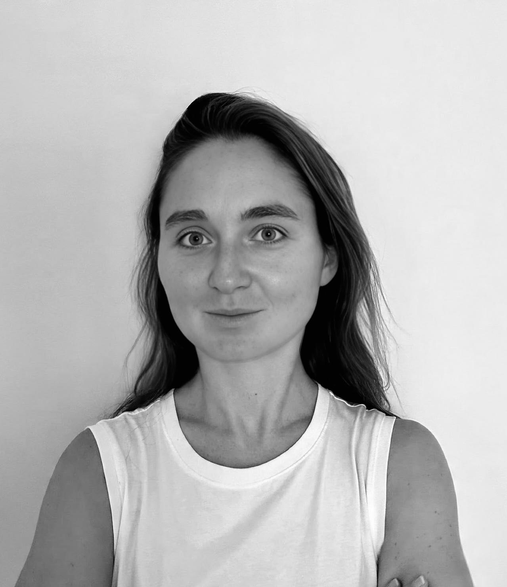

|
Charlotte Caucheteux
I am a Senior Research Scientist at Google DeepMind, where I lead the technical direction of the AI for Health team in Paris. Driven to create tangible impact in medicine, our team builds models and agents for medical applications, with a primary focus on oncology. Prior to this, I contributed to Gemini's pre-training to strengthen its foundational medical capabilities.
Previously, I was a Research Scientist at Meta AI (GenAI), where I led the Memory effort focused on LLaMA long-context and retrieval capabilities, and developed zero-shot tool use for LLaMA 3.
I hold a PhD in deep learning from Meta AI (FAIR) and Inria (investigating neural vs. artificial language representations) and graduated from École Polytechnique. Earlier in my career, I worked in healthcare AI at Owkin and AP-HP, and co-founded the AI-art collective NoArtist.
My research interests include Large Language Models, Neuroscience, and AI for healthcare & biology.
Feel free to connect on LinkedIn or Twitter.
|

|
Selected Publications
I am interested in the computational basis of natural and artificial intelligence, with a focus on language. As part of my PhD, I investigated language representations in deep neural networks and the human brain, using transformer-based language models and neuroimaging techniques (fMRI, MEG, and EEG). My publication history can be found on Google Scholar.
Preprints & Journal Articles
-
The Llama 3 Herd of Models
Llama Team (with Charlotte Caucheteux).
arXiv, 2024
-
Evidence of a predictive coding hierarchy in the human brain listening to speech
Charlotte Caucheteux, Alexandre Gramfort, Jean-Remi King.
Nature Human Behaviour, 2023
-
Brains and algorithms partially converge in natural language processing
Charlotte Caucheteux, Jean-Remi King.
Nature Communications Biology, 2022
-
Deep language algorithms predict semantic comprehension from brain activity
Charlotte Caucheteux, Alexandre Gramfort, Jean-Remi King.
Nature Scientific Reports, 2022
-
Decoding speech from non-invasive brain recordings
Alexandre Defossez, Charlotte Caucheteux, Jeremy Rapin, Ori Kabeli, Jean-Remi King.
Forthcoming, Nature Machine Intelligence, 2022
-
Predictive usefulness of RT-PCR testing in different patterns of Covid-19 symptomatology: analysis of a French cohort of 12,810 outpatients.
Caroline Apra*, Charlotte Caucheteux*, Arthur Mensch* et al., AP-HP/Universities/Inserm COVID-19 Research Collaboration.
Nature Scientific Reports, 2021
Conference Articles
-
Toward a realistic model of speech processing in the brain with self-supervised learning
Juliette Millet*, Charlotte Caucheteux*, P. Orhan, Y. Boubenec, A. Gramfort, E. Dunbar, C. Pallier, J.R. King.
NeurIPS, 2022
-
Disentangling syntax and semantics in the brain with deep networks
Charlotte Caucheteux, Alexandre Gramfort, Jean-Remi King.
ICML, 2021
-
Model-based analysis of brain activity reveals the hierarchy of language in 305 subjects
Charlotte Caucheteux, Alexandre Gramfort, Jean-Remi King.
Findings of EMNLP, 2021
Press Coverage
|
|
Misc.
- I received an MSc/BSc from Ecole Polytechnique (diplôme d'Ingénieur), with a specialisation in Machine Learning.
- I have a strong interest in Healthcare. Prior to my PhD, I had the chance to work for Owkin, a start-up (now unicorn!) applying AI to oncology (2017). I also worked for the Assistance Publique–Hôpitaux de Paris (AP-HP) during the COVID crisis (2019).
- Finally, I enjoy arts 🎨 and music 🎹. In 2019, two teammates and I founded NoArtist, a collective of AI-generated artworks. We regularly organise exhibitions and events to democratise AI through arts.
|
|